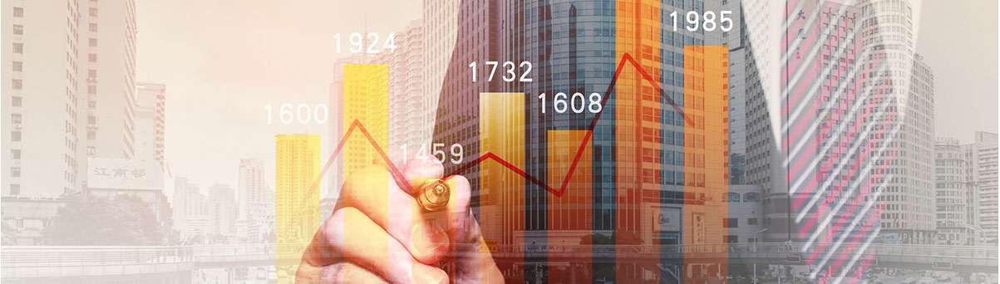

9月28日，人民日报发表时评《房地产市场是稳住宏观经济环境重要之锚》，文章强调房地产仍是经济的重要产业，这是多年的“去房地产化 9月28日，人民日报发表时评《房地产市场是稳住宏观经济环境重要之锚》，文章强调房地产仍是经济的重要产业，这是多年的“去房地产化

9月28日，人民日报发表时评《房地产市场是稳住宏观经济环境重要之锚》，文章强调房地产仍是经济的重要产业，这是多年的“去房地产化 9月28日，人民日报发表时评《房地产市场是稳住宏观经济环境重要之锚》，文章强调房地产仍是经济的重要产业，这是多年的“去房地产化 9月28日，人民日报发表时评《房地产市场是稳住宏观经济环境重要之锚》，文章强调房地产仍是经济的重要产业，这是多年的“去房地产化 9月28日，人民日报发表时评《房地产市场是稳住宏观经济环境重要之锚》，文章强调房地产仍是经济的重要产业，这是多年的“去房地产化